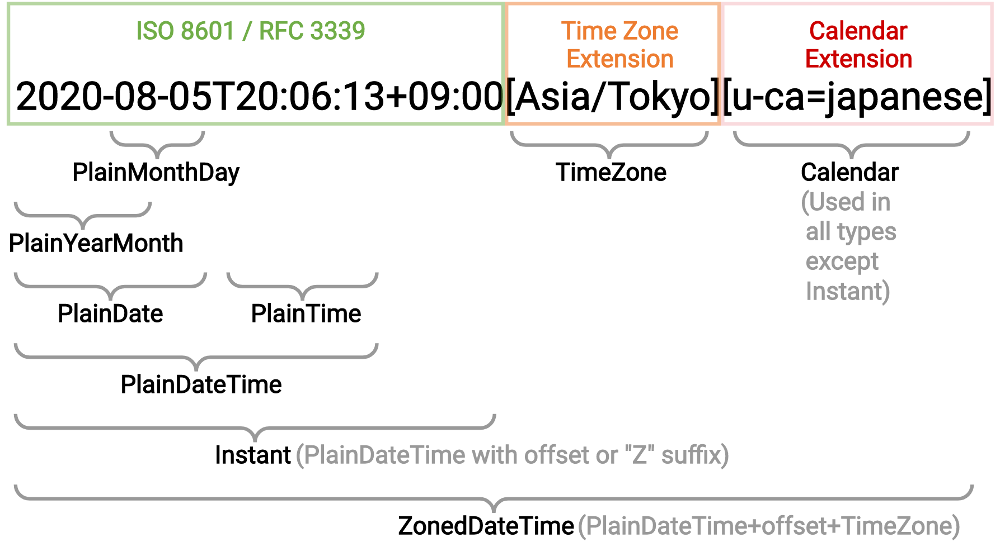

Philip Chimento Igalia, in partnership with Bloomberg TC39 March 2021
from() callsfrom() calls2020-08-05T20:06:13+09:00[Asia/Tokyo][u-ca=japanese]roundingMode: 'halfExpand', 'ceil', 'floor', 'trunc'monthCode propertyTemporal.now.plainDate('chinese').monthCode === "M03"
"M05L" for leap months, etc.Symbol.species from all Temporal classesthis as the constructorclass MyPlainDateTime extends Temporal.PlainDateTime {}
const mpdt = new MyPlainDateTime(2021, 3, 9, 'iso8601');
mpdt.add({ days: 1 })
// ↪ Temporal.PlainDateTime instance
MyPlainDateTime.from('2021-03-10')
// ↪ Temporal.PlainDateTime instance
Array.prototype.sort() is stable,Temporal.(type).compare() does not take the calendar or time zone into accountZonedDateTime.compare() works like Instant.compare()PlainDate, PlainDateTime, and PlainYearMonth compare the ISO datesequals() methodconst g = Temporal.PlainDate.from({ year: 2021, month: 3, day: 10, calendar: 'gregory' });
// ↪ 2021-03-10[u-ca=gregory]
const h = Temporal.PlainDate.from({ year: 5781, month: 6, day: 26, calendar: 'hebrew' });
// ↪ 2021-03-10[u-ca=hebrew]
Temporal.PlainDate.compare(g, h)
// previously: -1
// proposed: 0

from() callsPreviously:
const origFrom = Temporal.Calendar.from;
Temporal.Calendar.from = function (calendarLike) {
if (calendarLike === 'custom-calendar')
return new MyCustomCalendar();
return origFrom(calendarLike);
}
Temporal.PlainDate.from('1999-12-31[u-ca=custom-calendar]');
// => Party like it's 1999
from() callsMyCustomCalendar available globallyfrom() callsMyCustomCalendar available globallyfrom() callsfrom() calls(just an example, not a proposed API)
function calendarResolver(id) {
if (id === 'custom-calendar')
return new MyCustomCalendar();
return Temporal.Calendar.from(id);
}
Temporal.PlainDate.from('1999-12-31[u-ca=custom-calendar]', { calendarResolver });
Should these ❔ be 12 or 13 and should any of them be different?
const p = Temporal.now.plainDateTimeISO();
Temporal.Calendar.prototype.monthsInYear = () => 13;
p.monthsInYear // => ❔
p.calendar.monthsInYear(p) // => ❔
p.toPlainDate().monthsInYear // => ❔
p.toPlainYearMonth().monthsInYear // => ❔
month, e.g. 3)monthCode, e.g. "M03")